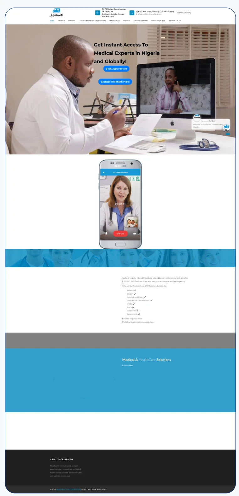
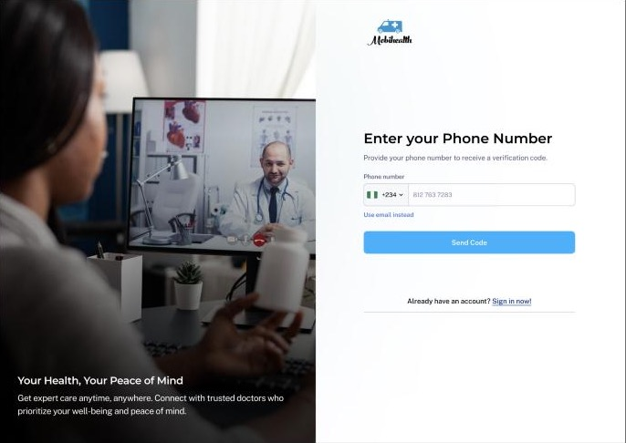
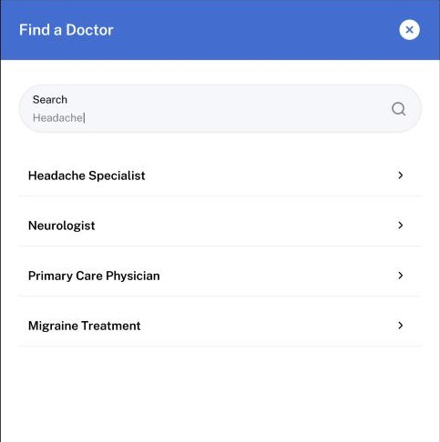
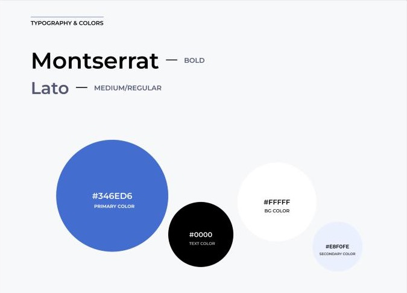

Booking a telehealth consultation, cut from 7 steps to 4.
I led the redesign of Mobihealth's website, patient web app, doctor dashboard and mobile app, with a design system underneath.
- Company
- Mobihealth International, a telehealth company
- Role
- Product Designer
- Scope
- Website, patient web app, doctor dashboard, mobile app, design system
- Years
- November 2023 to April 2025
- Worked with
- The CEO, marketing and engineering. I also mentored the designers who joined.
- What I owned
- Product UX and UI across all four surfaces, the design system, and the user research
- Result
- Booking a consultation went from 7 steps to 4 (my count of the old and new flows)
- Status
- Released and tested with real users. The company's public website is currently offline.
- Links
- Play StoreApp Store
Context
Mobihealth connects patients with doctors for video consultations. When I joined, the public website looked like this.

Reading it as a new visitor, five things got in the way:
- The hero asked for two decisions at once, with the buttons floating over a busy photo.
- The menu had about ten small items with no priority, under a header carrying two addresses and two phone numbers.
- Some sections were unfinished, with large blank areas and a blue band that still read "Content Here".
- Body text was very small and low-contrast.
- The FAQ was only a small link in the top corner, not a section on the page.
The brief named four problems: poor image quality, too little explanation of what the services were, no FAQ on the home page, and a cluttered landing page with weak hierarchy. The same kind of problem sat deeper in the product, where booking a doctor took seven steps.
Research
I interviewed three doctors and four patients, and compared Mobihealth with similar telehealth platforms. I tested prototypes before build, then watched how people reacted to and used the live platform.
Three findings shaped the product:
- Many people in rural areas don't have an email address.
- Patients often don't know which specialist treats what they're feeling.
- Doctors wanted to know why a patient was coming in before the consultation started.
Patients across both urban and rural areas had to be able to sign up, so these weren't edge cases.
Decisions
Sign-up starts with a phone number, not an email
Onboarding asks for a phone number first, defaults to Nigeria (+234), verifies with a six-digit code, and offers "Use email instead" as a fallback.
Why. Many people in rural areas don't have an email address. Asking for a phone number first let us reach patients in both urban and rural areas, not only those who already use email.

One search for specialty, symptom or procedure
Find a Doctor lets a patient type whatever is easiest for them. Typing a symptom such as "Headache" returns the specialists and services that treat it: a headache specialist, a neurologist, a primary care physician, migraine treatment.
Why. Patients often don't know which specialist treats what they're feeling. Someone with a headache or tooth pain may not know who to see. So instead of making them pick a specialist, they describe the symptom and the search shows who treats it. People who already know what they need can still search by specialty or procedure.

Booking cut from 7 steps to 4
Before, a patient opened the platform, went to a separate Book Consultation section, and then had to find a doctor without knowing who treats their illness. They filtered through lists and read each description to work it out. Time and date were chosen on separate pages, viewing a doctor's profile meant going to yet another page, and only at the end did they enter a reason, add any information and consent to the privacy policy.
Now there are four steps: search, choose a doctor (local or international), pick a date and time from that doctor's available slots, then add a reason, consent and book.
Why. The old flow made patients do the doctor's job and scattered related choices across pages. Combining search, doctor choice and scheduling kept them in one flow.
- Open the platform
- Find Book Consultation
- Browse and filter doctors
- Open the doctor's page
- Choose a time
- Choose a date
- Add reason, consent, book
- Search by specialty, symptom or procedure
- Choose a doctor
- Pick a date and time
- Add reason, consent, book
The before flow is described from memory, because the old screens no longer exist.
The doctor sees why the patient is coming in
Booking asks for a short reason for the consultation. During the video call, that reason appears in the header ("Reason for appointment") next to the patient's record number and the doctor's name, with only the essential controls below.
Why. In interviews, doctors said they wanted to know what the patient was coming in for before speaking to them. This way the doctor is prepared when the call starts.
A design system for four surfaces
I built and implemented a design system so the website, patient app, doctor dashboard and mobile app stayed consistent, and so engineering could build from shared components. It has foundations for colour and type (Montserrat for headings, Lato for text, one primary blue), 13 component groups, and a Video Consultation section component. Some components are specific to care, such as Appointment and Calendar.

What I got wrong first
Search started with the specialist. Patients browsed doctors and read descriptions to work out who they needed. Watching people use the live platform, and talking to them, showed they couldn't tell which specialist treated which symptom. I changed search to start from the symptom, and it now accepts a specialty or a procedure too.
The path to booking was too long. Seven steps across separate pages was too many. I redesigned it to four.
Outcome
Booking a consultation went from 7 steps to 4. That's a count of the old and new flows, not an analytics result. I don't have usage data from Mobihealth to share, so I haven't claimed any.